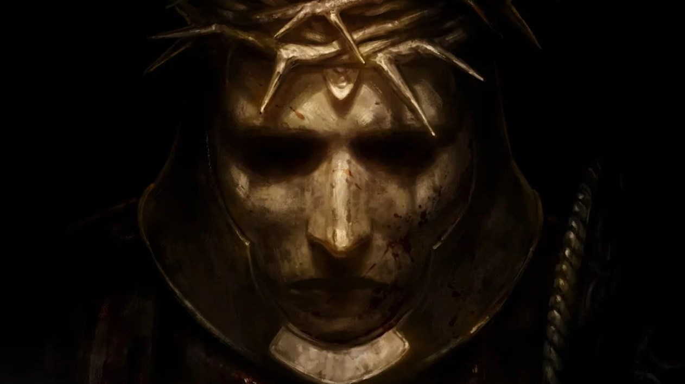
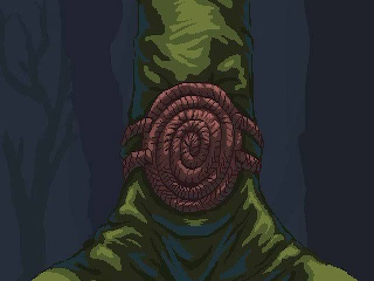
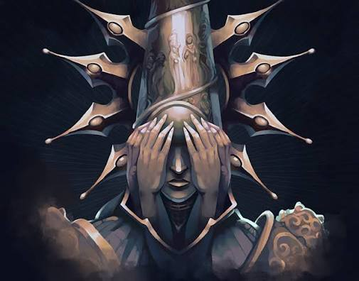
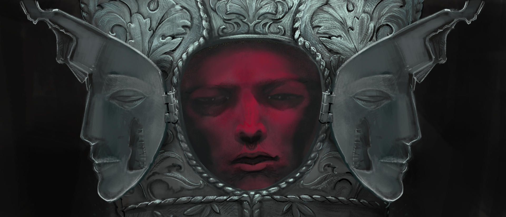
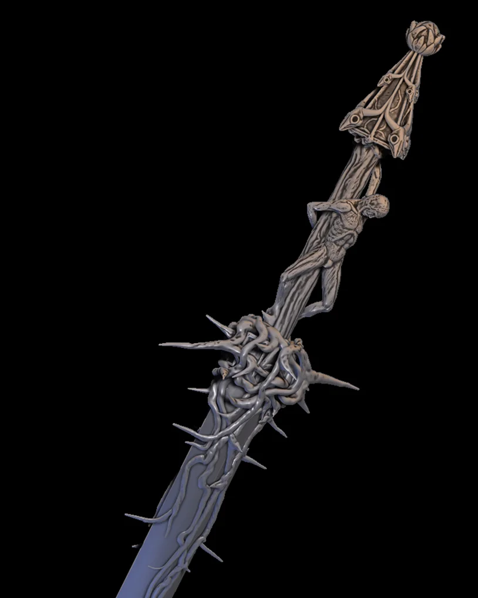
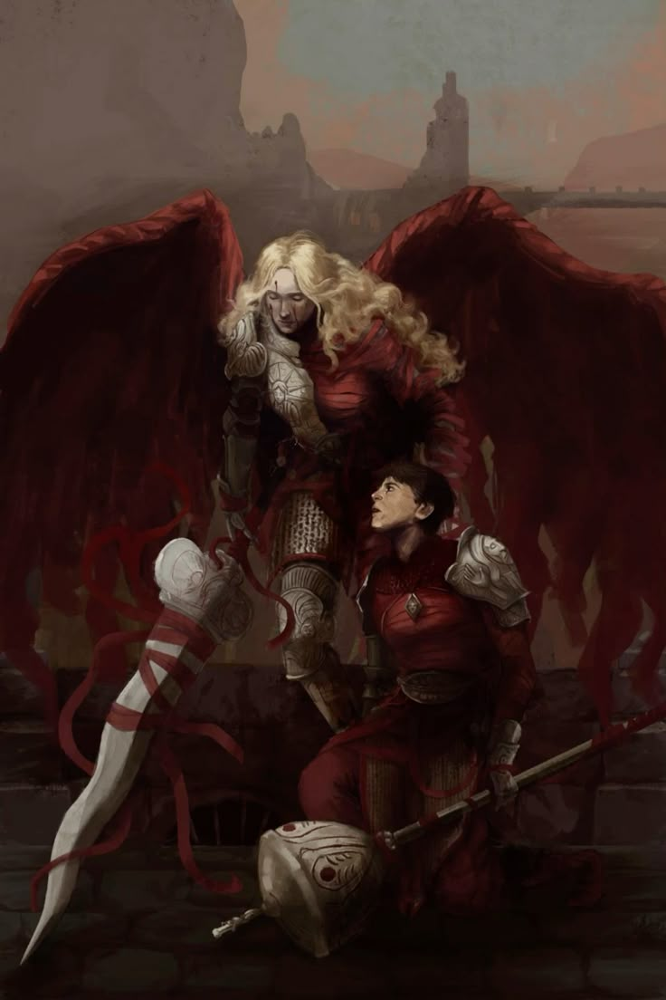

Meaculpa
Mea Culpa es la espada ceremonial del Penitente, forjada con espinas y raíces que simbolizan la penitencia y el pecado que carga su portador. Es su arma principal a lo largo de toda la aventura por Custodia.
A medida que avanza el juego, la espada se fortalece al encontrar sus corazones: cada corazón se ofrece en los altares de Mea Culpa y le concede nuevas habilidades y bonificaciones, haciendo que el arma evolucione junto con el Penitente.

Esdras y Perpetua
Esdras, caballero de la Legión Ungida, y Perpetua, la figura alada que lo acompaña, son dos personajes ligados a los antiguos guardianes de Custodia, marcados por el color rojo de la sangre y la devoción.
Su relevancia en la trama del juego radica en que sus caminos se cruzan con el del Penitente, revelando parte del pasado de la orden y el peso del Milagro sobre quienes la sirvieron.